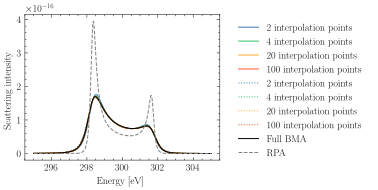

Note
Go to the end to download the full example code
Number of interpolation in the Born Mermin Chapman Interpolation
The Chapman Interpolation of the Born Mermin approximation saves computation time by evaluating the Structure factor not on all frequencies, but only on a given number of points, and interpolates after. This example is investigating the required number of points for the interpolation.
We also compare the number of points required when solving the integral for the
imaginary part of the collision frequency, or connecting it via a Kramers
Kronig relation (KKT = True). We observe that the number of grid-points has
to be higher for comparable quality of the result, when using KKT.
Note
The time printed in this script is the time after the first compilation (which normally takes a notable time).

Full BMA: 3.1819379329681396s
2 interp points: 0.16274738311767578s Mean deviation from full RPA: -6.417660737971308e-20 Max deviation from full RPA: 3.3269295227579567e-18
4 interp points: 0.16783547401428223s Mean deviation from full RPA: 5.842183106337609e-20 Max deviation from full RPA: 1.1313588367551087e-18
20 interp points: 0.22651004791259766s Mean deviation from full RPA: -2.8298423586592834e-20 Max deviation from full RPA: 4.2172178767420766e-20
100 interp points: 0.43017578125s Mean deviation from full RPA: -3.277086057580894e-20 Max deviation from full RPA: 2.137215271671695e-20
2 interp points: 0.1705799102783203s Mean deviation from full RPA: 2.200652021343034e-19 Max deviation from full RPA: 2.9810113737122587e-18
4 interp points: 0.17468619346618652s Mean deviation from full RPA: 1.1844918959575883e-19 Max deviation from full RPA: 1.0306087100343865e-18
20 interp points: 0.23956036567687988s Mean deviation from full RPA: 2.278627298005906e-20 Max deviation from full RPA: 1.2710680301020966e-18
100 interp points: 0.44995546340942383s Mean deviation from full RPA: 2.0669797057135996e-20 Max deviation from full RPA: 1.2838363569820362e-18
RPA: 0.055349111557006836s
import os
import time
from functools import partial
import jax
import jax.numpy as jnp
import matplotlib.pyplot as plt
import jaxrts
# Allow jax to use 6 CPUs, see
# https://astralord.github.io/posts/exploring-parallel-strategies-with-jax/
os.environ["XLA_FLAGS"] = "--xla_force_host_platform_device_count=6"
ureg = jaxrts.units.ureg
plt.style.use("science")
# Create a sharding for the probing energies
measured_energy = jnp.linspace(295, 305, 300) * ureg.electron_volt
setup = jaxrts.setup.Setup(
ureg("60°"),
energy=ureg("300eV"),
measured_energy=measured_energy,
instrument=partial(
jaxrts.instrument_function.instrument_gaussian,
sigma=(0.01 * ureg.electron_volt) / ureg.hbar,
),
)
state = jaxrts.PlasmaState(
[jaxrts.Element("H")],
jnp.array([1.0]),
jnp.array([0.0017]) * ureg.gram / ureg.centimeter**3,
jnp.array([2]) * ureg.electron_volt / ureg.k_B,
jnp.array([2]) * ureg.electron_volt / ureg.k_B,
)
state["free-free scattering"] = jaxrts.models.BornMermin_Full()
# This is required for the S_ii in the collision frequency
state["ionic scattering"] = jaxrts.models.ArkhipovIonFeat()
# This is required for the V_eiS in the collision frequency
state["BM V_eiS"] = jaxrts.models.DebyeHueckel_BM_V()
state["BM S_ii"] = jaxrts.models.Sum_Sii()
state.evaluate("free-free scattering", setup).m_as(ureg.second)
t0 = time.time()
BM_free_free_scatter = state.evaluate("free-free scattering", setup).m_as(
ureg.second
)
jax.block_until_ready(BM_free_free_scatter)
print(f"Full BMA: {time.time()-t0}s")
state["free-free scattering"] = jaxrts.models.BornMermin()
state["free-free scattering"].set_guessed_E_cutoffs(state, setup)
for ls, KKT in zip(["solid", "dotted"], [False, True], strict=False):
for i, no_of_freq in enumerate([2, 4, 20, 100]):
state["free-free scattering"].no_of_freq = no_of_freq
state["free-free scattering"].KKT = KKT
state.evaluate("free-free scattering", setup).m_as(ureg.second)
t0 = time.time()
free_free_scatter = state.evaluate("free-free scattering", setup).m_as(
ureg.second
)
jax.block_until_ready(free_free_scatter)
print(
f"{no_of_freq} interp points: {time.time()-t0}s ",
"Mean deviation from full RPA: ",
jnp.mean(free_free_scatter - BM_free_free_scatter),
"Max deviation from full RPA: ",
jnp.max(free_free_scatter - BM_free_free_scatter),
)
plt.plot(
setup.measured_energy.m_as(ureg.electron_volt),
free_free_scatter,
label=f"{no_of_freq} interpolation points",
linestyle=ls,
color=f"C{i}",
alpha=0.8,
)
plt.plot(
setup.measured_energy.m_as(ureg.electron_volt),
BM_free_free_scatter,
label="Full BMA",
color="black",
)
state["free-free scattering"] = jaxrts.models.RPA()
state.evaluate("free-free scattering", setup).m_as(ureg.second)
t0 = time.time()
free_free_scatter = state.evaluate("free-free scattering", setup).m_as(
ureg.second
)
jax.block_until_ready(free_free_scatter)
print(f"RPA: {time.time()-t0}s")
plt.plot(
setup.measured_energy.m_as(ureg.electron_volt),
free_free_scatter,
label="RPA",
linestyle="dashed",
color="gray",
)
plt.xlabel("Energy [eV]")
plt.ylabel("Scattering intensity")
plt.legend(loc="upper left", bbox_to_anchor=(1.05, 1.00))
plt.show()
Total running time of the script: (1 minutes 5.273 seconds)